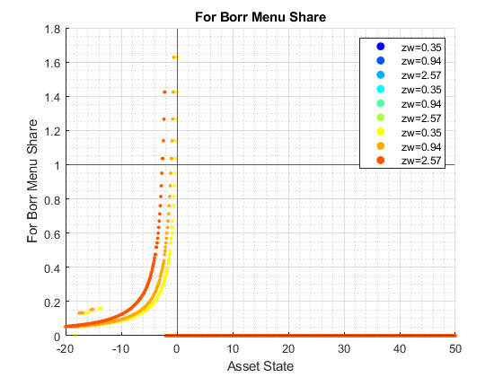
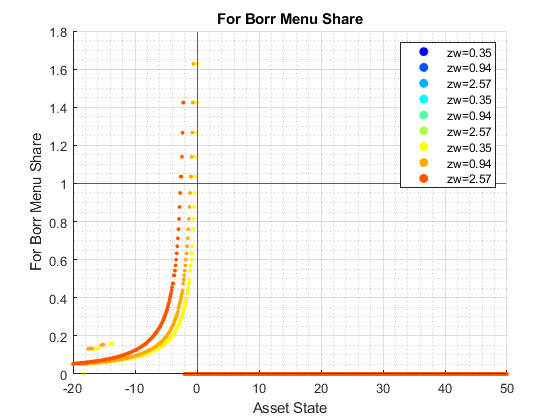

Derive Distributions for For+Inf+Borr+Save One Asset (Wrapper)
back to Fan's Dynamic Assets Repository Table of Content.
Contents
function [result_map] = ff_abz_fibs_ds_wrapper(varargin)
FF_abz_fibs_FIBS_DS_WRAPPER finds the stationary asset distributions
This is a warpper function. Note that abz and abz_fibs will not produce the same results even when formal and informal borrowing rates are the same, because they are solved differently, one where asset is principles only, and the other where asset has both principles as well as interest rates.
Default
- it_subset = 5 is basic invoke quick test
- it_subset = 6 is invoke full test
- it_subset = 7 is profiling invoke
- it_subset = 8 is matlab publish
- it_subset = 9 is invoke operational (only final stats) and coh graph
it_param_set = 8; bl_input_override = true; [param_map, support_map] = ffs_abz_fibs_set_default_param(it_param_set); % Note: param_map and support_map can be adjusted here or outside to override defaults % param_map('it_a_n') = 750; % param_map('it_z_n') = 15; % param_map('fl_r_fsv') = 0.025; % param_map('fl_r_fbr') = 0.065; % param_map('fl_z_r_borr_poiss_mean') = 5; % param_map('fl_c_min') = 0.02; % param_map('st_analytical_stationary_type') = 'loop'; % param_map('st_analytical_stationary_type') = 'vector'; param_map('st_analytical_stationary_type') = 'eigenvector'; % get armt and func map [armt_map, func_map] = ffs_abz_fibs_get_funcgrid(param_map, support_map, bl_input_override); % 1 for override default_params = {param_map support_map armt_map func_map};
Parse Parameters 1
% if varargin only has param_map and support_map, params_len = length(varargin); [default_params{1:params_len}] = varargin{:}; param_map = [param_map; default_params{1}]; support_map = [support_map; default_params{2}]; if params_len >= 1 && params_len <= 2 % If override param_map, re-generate armt and func if they are not % provided bl_input_override = true; [armt_map, func_map] = ffs_abz_fibs_get_funcgrid(param_map, support_map, bl_input_override); else % Override all armt_map = [armt_map; default_params{3}]; func_map = [func_map; default_params{4}]; end % if profile, profile DP + Dist here support_map('bl_profile_dist') = false; % append function name st_func_name = 'ff_abz_fibs_ds_wrapper'; support_map('st_profile_name_main') = [st_func_name support_map('st_profile_name_main')]; support_map('st_mat_name_main') = [st_func_name support_map('st_mat_name_main')]; support_map('st_img_name_main') = [st_func_name support_map('st_img_name_main')];
Parse Parameters
% param_map params_group = values(param_map, {'st_analytical_stationary_type'}); [st_analytical_stationary_type] = params_group{:}; % support_map params_group = values(support_map, ... {'st_profile_path', 'st_profile_prefix', 'st_profile_name_main', 'st_profile_suffix','bl_time'}); [st_profile_path, st_profile_prefix, st_profile_name_main, st_profile_suffix, bl_time] = params_group{:};
Start Profiler and Timer
Start Profile
if (it_param_set == 7) close all; profile off; profile on; end % Start Timer if (bl_time) tic; end
Solve DP
bl_input_override = true; result_map = ff_abz_fibs_vf_vecsv(param_map, support_map, armt_map, func_map);
Map with properties:
Count: 42
KeyType: char
ValueType: any
pos = 1 ; key = bl_b_is_principle ; val = false
pos = 2 ; key = bl_bridge ; val = true
pos = 3 ; key = bl_default ; val = true
pos = 4 ; key = bl_loglin ; val = false
pos = 5 ; key = bl_rollover ; val = true
pos = 6 ; key = fl_a_max ; val = 50
pos = 7 ; key = fl_a_min ; val = 0
pos = 8 ; key = fl_b_bd ; val = -20
pos = 9 ; key = fl_beta ; val = 0.94
pos = 10 ; key = fl_c_min ; val = 0.02
pos = 11 ; key = fl_crra ; val = 1.5
pos = 12 ; key = fl_default_aprime ; val = 0
pos = 13 ; key = fl_forbrblk_brleast ; val = -1
pos = 14 ; key = fl_forbrblk_brmost ; val = -19
pos = 15 ; key = fl_forbrblk_gap ; val = -1.5
pos = 16 ; key = fl_loglin_threshold ; val = 1
pos = 17 ; key = fl_nan_replace ; val = -99999
pos = 18 ; key = fl_r_fbr ; val = 0.065
pos = 19 ; key = fl_r_fsv ; val = 0.025
pos = 20 ; key = fl_tol_dist ; val = 1e-05
pos = 21 ; key = fl_tol_pol ; val = 1e-05
pos = 22 ; key = fl_tol_val ; val = 1e-05
pos = 23 ; key = fl_w ; val = 1.28
pos = 24 ; key = fl_z_r_borr_max ; val = 0.095
pos = 25 ; key = fl_z_r_borr_min ; val = 0.025
pos = 26 ; key = fl_z_r_borr_n ; val = 5
pos = 27 ; key = fl_z_r_borr_poiss_mean ; val = 20
pos = 28 ; key = fl_z_wage_mu ; val = 0
pos = 29 ; key = fl_z_wage_rho ; val = 0.8
pos = 30 ; key = fl_z_wage_sig ; val = 0.2
pos = 31 ; key = it_a_n ; val = 750
pos = 32 ; key = it_maxiter_dist ; val = 1000
pos = 33 ; key = it_maxiter_val ; val = 1000
pos = 34 ; key = it_tol_pol_nochange ; val = 25
pos = 35 ; key = it_trans_power_dist ; val = 1000
pos = 36 ; key = it_z_n ; val = 75
pos = 37 ; key = it_z_wage_n ; val = 15
pos = 38 ; key = st_analytical_stationary_type ; val = eigenvector
pos = 39 ; key = st_forbrblk_type ; val = seg3
pos = 40 ; key = st_model ; val = abz_fibs
pos = 41 ; key = st_z_r_borr_drv_ele_type ; val = unif
pos = 42 ; key = st_z_r_borr_drv_prb_type ; val = poiss
Map with properties:
Count: 43
KeyType: char
ValueType: any
pos = 1 ; key = bl_display ; val = false
pos = 2 ; key = bl_display_defparam ; val = true
pos = 3 ; key = bl_display_dist ; val = false
pos = 4 ; key = bl_display_final ; val = false
pos = 5 ; key = bl_display_final_dist ; val = true
pos = 6 ; key = bl_display_final_dist_detail ; val = true
pos = 7 ; key = bl_display_funcgrids ; val = false
pos = 8 ; key = bl_display_infbridge ; val = false
pos = 9 ; key = bl_display_minccost ; val = false
pos = 10 ; key = bl_graph ; val = true
pos = 11 ; key = bl_graph_coh_t_coh ; val = true
pos = 12 ; key = bl_graph_discrete ; val = true
pos = 13 ; key = bl_graph_forinf_discrete ; val = false
pos = 14 ; key = bl_graph_forinf_pol_lvl ; val = false
pos = 15 ; key = bl_graph_forinf_pol_pct ; val = true
pos = 16 ; key = bl_graph_funcgrids ; val = false
pos = 17 ; key = bl_graph_onebyones ; val = true
pos = 18 ; key = bl_graph_pol_lvl ; val = false
pos = 19 ; key = bl_graph_pol_pct ; val = false
pos = 20 ; key = bl_graph_val ; val = false
pos = 21 ; key = bl_img_save ; val = false
pos = 22 ; key = bl_mat ; val = false
pos = 23 ; key = bl_post ; val = true
pos = 24 ; key = bl_profile ; val = false
pos = 25 ; key = bl_profile_dist ; val = false
pos = 26 ; key = bl_time ; val = false
pos = 27 ; key = it_display_every ; val = 20
pos = 28 ; key = it_display_final_colmax ; val = 15
pos = 29 ; key = it_display_final_rowmax ; val = 100
pos = 30 ; key = st_img_name_main ; val = ff_abz_fibs_vf_vecsvff_abz_fibs_ds_wrapper_default
pos = 31 ; key = st_img_path ; val = C:/Users/fan/CodeDynaAsset//m_fibs//m_abz_solve/img/
pos = 32 ; key = st_img_prefix ; val =
pos = 33 ; key = st_img_suffix ; val = _p8.png
pos = 34 ; key = st_mat_name_main ; val = ff_abz_fibs_vf_vecsvff_abz_fibs_ds_wrapper_default
pos = 35 ; key = st_mat_path ; val = C:/Users/fan/CodeDynaAsset//m_fibs//m_abz_solve/mat/
pos = 36 ; key = st_mat_prefix ; val =
pos = 37 ; key = st_mat_suffix ; val = _p8
pos = 38 ; key = st_matimg_path_root ; val = C:/Users/fan/CodeDynaAsset//m_fibs/
pos = 39 ; key = st_profile_name_main ; val = ff_abz_fibs_vf_vecsvff_abz_fibs_ds_wrapper_default
pos = 40 ; key = st_profile_path ; val = C:/Users/fan/CodeDynaAsset//m_fibs//m_abz_solve/profile/
pos = 41 ; key = st_profile_prefix ; val =
pos = 42 ; key = st_profile_suffix ; val = _p8
pos = 43 ; key = st_title_prefix ; val =
Warning: Using only the real component of complex data.
Warning: Using only the real component of complex data.
Warning: Using only the real component of complex data.


 
 


Derive Distribution
if (strcmp(st_analytical_stationary_type, 'loop')) result_map = ff_az_ds(param_map, support_map, armt_map, func_map, result_map, bl_input_override); elseif (strcmp(st_analytical_stationary_type, 'vector')) result_map = ff_az_ds_vec(param_map, support_map, armt_map, func_map, result_map, bl_input_override); elseif (strcmp(st_analytical_stationary_type, 'eigenvector')) result_map = ff_az_ds_vecsv(param_map, support_map, armt_map, func_map, result_map, bl_input_override); end
----------------------------------------
xxxxxxxxxxxxxxxxxxxxxxxxxxxxxxxxxxxxxxxx
Summary Statistics for: cl_mt_pol_a
xxxxxxxxxxxxxxxxxxxxxxxxxxxxxxxxxxxxxxxx
----------------------------------------
fl_choice_mean
-2.7997
fl_choice_sd
5.1230
fl_choice_coefofvar
-1.8298
fl_choice_prob_zero
0.0491
fl_choice_prob_below_zero
0.6796
fl_choice_prob_above_zero
0.2713
fl_choice_prob_max
4.4860e-33
tb_prob_drv
percentiles cl_mt_pol_aPercentileValues fracOfSumHeldBelowThisPercentile
___________ ___________________________ ________________________________
0.1 -20 0.11855
1 -20 0.11855
5 -15.234 0.32192
10 -10.841 0.54977
15 -7.6636 0.71467
20 -5.4206 0.8311
25 -3.9252 0.91101
35 -2.1495 1.0156
50 -1.028 1.0944
65 -0.18692 1.1229
75 0.093458 1.1228
80 0.37383 1.1178
85 0.74766 1.1061
90 1.215 1.0915
95 2.1495 1.0614
99 4.2991 1.0196
99.9 7.1028 1.0029
----------------------------------------
xxxxxxxxxxxxxxxxxxxxxxxxxxxxxxxxxxxxxxxx
Summary Statistics for: cl_mt_coh
xxxxxxxxxxxxxxxxxxxxxxxxxxxxxxxxxxxxxxxx
----------------------------------------
fl_choice_mean
-2.6830
fl_choice_sd
5.1231
fl_choice_coefofvar
-1.9094
fl_choice_prob_zero
0
fl_choice_prob_below_zero
0.6577
fl_choice_prob_above_zero
0.3423
fl_choice_prob_max
2.3117e-32
tb_prob_drv
percentiles cl_mt_cohPercentileValues fracOfSumHeldBelowThisPercentile
___________ _________________________ ________________________________
0.1 -19.901 0.023277
1 -19.878 0.12298
5 -15.112 0.33374
10 -10.72 0.56933
15 -7.542 0.7392
20 -5.299 0.85849
25 -3.8036 0.93975
35 -2.0279 1.0445
50 -0.90644 1.12
65 -0.065316 1.1431
75 0.21506 1.1389
80 0.49543 1.1314
85 0.84686 1.1198
90 1.3366 1.0998
95 2.2711 1.0662
99 4.4207 1.0209
99.9 7.2244 1.003
----------------------------------------
xxxxxxxxxxxxxxxxxxxxxxxxxxxxxxxxxxxxxxxx
Summary Statistics for: cl_mt_pol_c
xxxxxxxxxxxxxxxxxxxxxxxxxxxxxxxxxxxxxxxx
----------------------------------------
fl_choice_mean
1.3503
fl_choice_sd
0.2936
fl_choice_coefofvar
0.2174
fl_choice_prob_zero
0
fl_choice_prob_below_zero
0
fl_choice_prob_above_zero
1.0000
fl_choice_prob_max
4.4860e-33
tb_prob_drv
percentiles cl_mt_pol_cPercentileValues fracOfSumHeldBelowThisPercentile
___________ ___________________________ ________________________________
0.1 0.02 0.00024464
1 0.02 0.00024464
5 1.0972 0.027471
10 1.1205 0.068208
15 1.1389 0.11113
20 1.1568 0.15435
25 1.1776 0.19571
35 1.2272 0.28617
50 1.3021 0.42559
65 1.4071 0.57695
75 1.5029 0.68374
80 1.5288 0.74183
85 1.6245 0.7992
90 1.6983 0.86116
95 1.8401 0.92588
99 2.0984 0.98342
99.9 2.4131 0.99815
----------------------------------------
xxxxxxxxxxxxxxxxxxxxxxxxxxxxxxxxxxxxxxxx
Summary Statistics for: cl_mt_pol_b_bridge
xxxxxxxxxxxxxxxxxxxxxxxxxxxxxxxxxxxxxxxx
----------------------------------------
fl_choice_mean
-2.3840
fl_choice_sd
4.3766
fl_choice_coefofvar
-1.8358
fl_choice_prob_zero
0.5459
fl_choice_prob_below_zero
0.4541
fl_choice_prob_above_zero
0
fl_choice_prob_max
0.5459
tb_prob_drv
percentiles cl_mt_pol_b_bridgePercentileValues fracOfSumHeldBelowThisPercentile
___________ __________________________________ ________________________________
0.1 -18.786 0.0081422
1 -18.082 0.077389
5 -13.515 0.34019
10 -9.2711 0.57616
15 -6.2208 0.7372
20 -4.0718 0.84391
25 -2.6172 0.91275
35 -0.92779 0.98215
50 0 1
65 0 1
75 0 1
80 0 1
85 0 1
90 0 1
95 0 1
99 0 1
99.9 0 1
----------------------------------------
xxxxxxxxxxxxxxxxxxxxxxxxxxxxxxxxxxxxxxxx
Summary Statistics for: cl_mt_pol_inf_borr_nobridge
xxxxxxxxxxxxxxxxxxxxxxxxxxxxxxxxxxxxxxxx
----------------------------------------
fl_choice_mean
-0.1885
fl_choice_sd
0.2414
fl_choice_coefofvar
-1.2810
fl_choice_prob_zero
0.3997
fl_choice_prob_below_zero
0.6003
fl_choice_prob_above_zero
0
fl_choice_prob_max
0.3997
tb_prob_drv
percentiles cl_mt_pol_inf_borr_nobridgePercentileValues fracOfSumHeldBelowThisPercentile
___________ ___________________________________________ ________________________________
0.1 -1.6571 0.010464
1 -1.215 0.078032
5 -0.57172 0.23298
10 -0.48527 0.3741
15 -0.43571 0.49705
20 -0.37383 0.61362
25 -0.29558 0.69207
35 -0.19435 0.82399
50 -0.12248 0.95198
65 0 1
75 0 1
80 0 1
85 0 1
90 0 1
95 0 1
99 0 1
99.9 0 1
----------------------------------------
xxxxxxxxxxxxxxxxxxxxxxxxxxxxxxxxxxxxxxxx
Summary Statistics for: cl_mt_pol_for_borr
xxxxxxxxxxxxxxxxxxxxxxxxxxxxxxxxxxxxxxxx
----------------------------------------
fl_choice_mean
-0.5894
fl_choice_sd
0.5546
fl_choice_coefofvar
-0.9409
fl_choice_prob_zero
0.4562
fl_choice_prob_below_zero
0.5438
fl_choice_prob_above_zero
0
fl_choice_prob_max
0.4562
tb_prob_drv
percentiles cl_mt_pol_for_borrPercentileValues fracOfSumHeldBelowThisPercentile
___________ __________________________________ ________________________________
0.1 -2.6625 0.028955
1 -1.065 1
5 -1.065 1
10 -1.065 1
15 -1.065 1
20 -1.065 1
25 -1.065 1
35 -1.065 1
50 -1.065 1
65 0 1
75 0 1
80 0 1
85 0 1
90 0 1
95 0 1
99 0 1
99.9 0 1
----------------------------------------
xxxxxxxxxxxxxxxxxxxxxxxxxxxxxxxxxxxxxxxx
Summary Statistics for: cl_mt_pol_for_save
xxxxxxxxxxxxxxxxxxxxxxxxxxxxxxxxxxxxxxxx
----------------------------------------
fl_choice_mean
0.3622
fl_choice_sd
0.8777
fl_choice_coefofvar
2.4236
fl_choice_prob_zero
0.6494
fl_choice_prob_below_zero
0
fl_choice_prob_above_zero
0.3506
fl_choice_prob_max
4.4860e-33
tb_prob_drv
percentiles cl_mt_pol_for_savePercentileValues fracOfSumHeldBelowThisPercentile
___________ __________________________________ ________________________________
0.1 0 0
1 0 0
5 0 0
10 0 0
15 0 0
20 0 0
25 0 0
35 0 0
50 0 0
65 0.036963 0.0021536
75 0.22388 0.035751
80 0.41079 0.083134
85 0.74766 0.17988
90 1.215 0.29263
95 2.1495 0.52504
99 4.2991 0.84834
99.9 7.1028 0.97777
xxx All Variables PERCENTILES AND STATS xxx
tb_outcomes_meansdperc: mean, sd, percentiles
mean sd coefofvar min max pYis0 pYls0 pYgr0 pYisMINY pYisMAXY p0_1 p1 p5 p10 p15 p20 p25 p35 p50 p65 p75 p80 p85 p90 p95 p99 p99_9
________ _______ _________ _______ ______ _______ _______ _______ __________ __________ _______ _______ ________ ________ ________ ________ ________ ________ ________ _________ ________ _______ _______ ______ ______ ______ ______
cl_mt_pol_a -2.7997 5.123 -1.8298 -20 49.626 0.04906 0.67959 0.27135 0.016595 4.486e-33 -20 -20 -15.234 -10.841 -7.6636 -5.4206 -3.9252 -2.1495 -1.028 -0.18692 0.093458 0.37383 0.74766 1.215 2.1495 4.2991 7.1028
cl_mt_coh -2.683 5.1231 -1.9094 -19.968 50.122 0 0.65768 0.34232 2.0187e-06 2.3117e-32 -19.901 -19.878 -15.112 -10.72 -7.542 -5.299 -3.8036 -2.0279 -0.90644 -0.065316 0.21506 0.49543 0.84686 1.3366 2.2711 4.4207 7.2244
cl_mt_pol_c 1.3503 0.29359 0.21743 0.02 4.87 0 0 1 0.016517 4.486e-33 0.02 0.02 1.0972 1.1205 1.1389 1.1568 1.1776 1.2272 1.3021 1.4071 1.5029 1.5288 1.6245 1.6983 1.8401 2.0984 2.4131
cl_mt_pol_b_bridge -2.384 4.3766 -1.8358 -19.54 0 0.54586 0.45414 0 2.313e-18 0.54586 -18.786 -18.082 -13.515 -9.2711 -6.2208 -4.0718 -2.6172 -0.92779 0 0 0 0 0 0 0 0 0
cl_mt_pol_inf_borr_nobridge -0.18847 0.24143 -1.281 -3.0359 0 0.39967 0.60033 0 3.6648e-11 0.39967 -1.6571 -1.215 -0.57172 -0.48527 -0.43571 -0.37383 -0.29558 -0.19435 -0.12248 0 0 0 0 0 0 0 0
cl_mt_pol_for_borr -0.58941 0.5546 -0.94094 -2.6625 0 0.45618 0.54382 0 0.0064099 0.45618 -2.6625 -1.065 -1.065 -1.065 -1.065 -1.065 -1.065 -1.065 -1.065 0 0 0 0 0 0 0 0
cl_mt_pol_for_save 0.36217 0.87774 2.4236 0 49.626 0.64939 0 0.35061 0.64939 4.486e-33 0 0 0 0 0 0 0 0 0 0.036963 0.22388 0.41079 0.74766 1.215 2.1495 4.2991 7.1028
xxx All Variables Fraction of Y Held up to Percentile xxx
tb_outcomes_fracheld: fraction of asset/income/etc held by hh up to this percentile
fracByP0_1 fracByP1 fracByP5 fracByP10 fracByP15 fracByP20 fracByP25 fracByP35 fracByP50 fracByP65 fracByP75 fracByP80 fracByP85 fracByP90 fracByP95 fracByP99 fracByP99_9
__________ __________ ________ _________ _________ _________ _________ _________ _________ _________ _________ _________ _________ _________ _________ _________ ___________
cl_mt_pol_a 0.11855 0.11855 0.32192 0.54977 0.71467 0.8311 0.91101 1.0156 1.0944 1.1229 1.1228 1.1178 1.1061 1.0915 1.0614 1.0196 1.0029
cl_mt_coh 0.023277 0.12298 0.33374 0.56933 0.7392 0.85849 0.93975 1.0445 1.12 1.1431 1.1389 1.1314 1.1198 1.0998 1.0662 1.0209 1.003
cl_mt_pol_c 0.00024464 0.00024464 0.027471 0.068208 0.11113 0.15435 0.19571 0.28617 0.42559 0.57695 0.68374 0.74183 0.7992 0.86116 0.92588 0.98342 0.99815
cl_mt_pol_b_bridge 0.0081422 0.077389 0.34019 0.57616 0.7372 0.84391 0.91275 0.98215 1 1 1 1 1 1 1 1 1
cl_mt_pol_inf_borr_nobridge 0.010464 0.078032 0.23298 0.3741 0.49705 0.61362 0.69207 0.82399 0.95198 1 1 1 1 1 1 1 1
cl_mt_pol_for_borr 0.028955 1 1 1 1 1 1 1 1 1 1 1 1 1 1 1 1
cl_mt_pol_for_save 0 0 0 0 0 0 0 0 0 0.0021536 0.035751 0.083134 0.17988 0.29263 0.52504 0.84834 0.97777
End Profiler and Timer
End Timer
if (bl_time) toc; end % End Profile if (it_param_set == 7) profile off profile viewer st_file_name = [st_profile_prefix st_profile_name_main st_profile_suffix]; profsave(profile('info'), strcat(st_profile_path, st_file_name)); end
end
ans =
Map with properties:
Count: 21
KeyType: char
ValueType: any